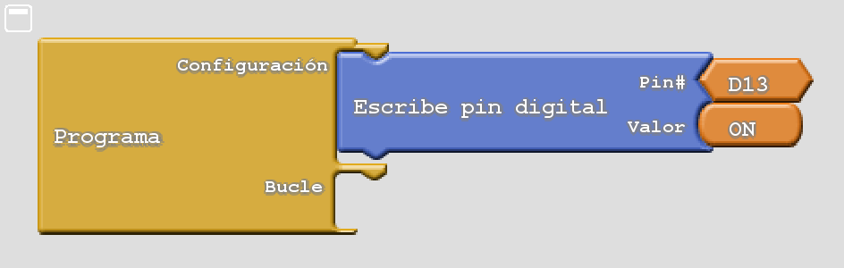
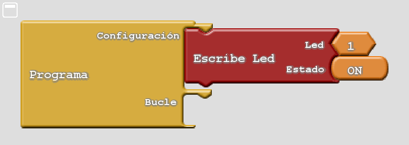

2. Exercises with led, on and off¶
Program the blocks needed to solve the following problems.
On and off the led of the Arduino board¶
Copy the following program to turn on led D13 of the Arduino board.
Copy the following program to make the D13 led on the Arduino board blink.

Carry out a program that achieves led D13 blinking with an on time of one tenth of a second and an off time of two seconds.
{kind=link}
Switching the control panel LEDs on and off¶
Copy the following program to turn on led D1 of the Picuino control panel.
Turn on leds D1, D3 and D5 permanently.
Turn on led D1, wait one second, turn on led D2, wait one second, continue the sequence until the first 4 leds are on. Once finished, the program will keep the 4 leds on.
Turn on the red, amber and green leds as in a traffic light.
First the green led will light up and stay on for 4 seconds. Then the green led will turn off and the amber led will light up for 3 seconds. Finally, the amber led will turn off and the red one will turn on, which will remain on for 4 seconds.
This sequence will repeat continuously.
Modify the previous exercise so that the amber led blinks three times, changing from on to off every half second, before turning on the red led.
Program a beacon that turns on alternately the red led and the blue led. Each led should stay on for one second. One of the two LEDs must always be on and both LEDs will never be on at the same time.
When the program starts, led D1 will light up. After a second, led D1 will go out and led D2 will light up. In this way, the first 5 leds will continue to light up, so that at any given moment only one led will be on. Once the sequence is finished, it will start over from the beginning.
Make a modification to the previous exercise so that at all times there are 2 LEDs on.
When the program starts, leds D1 and D2 should light up.
After a second, leds D2 and D3 will light up.
The sequence will continue until leds D6 and D1 are on.
From this moment on, the program will be repeated starting again from the beginning.
{kind=link}